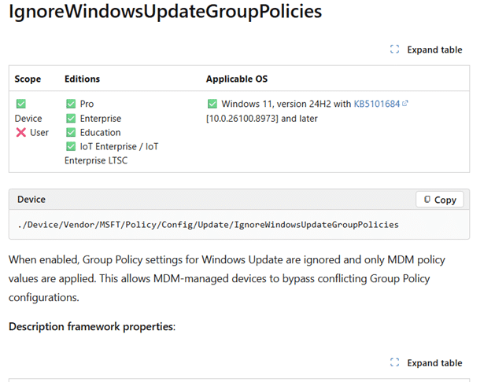
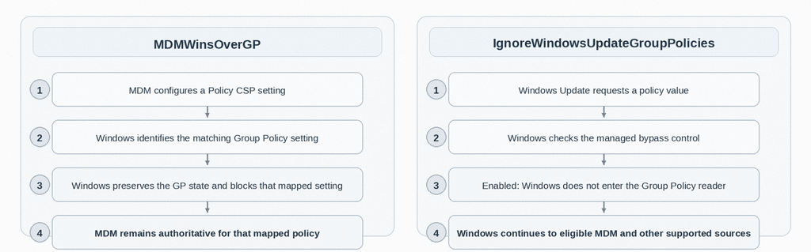
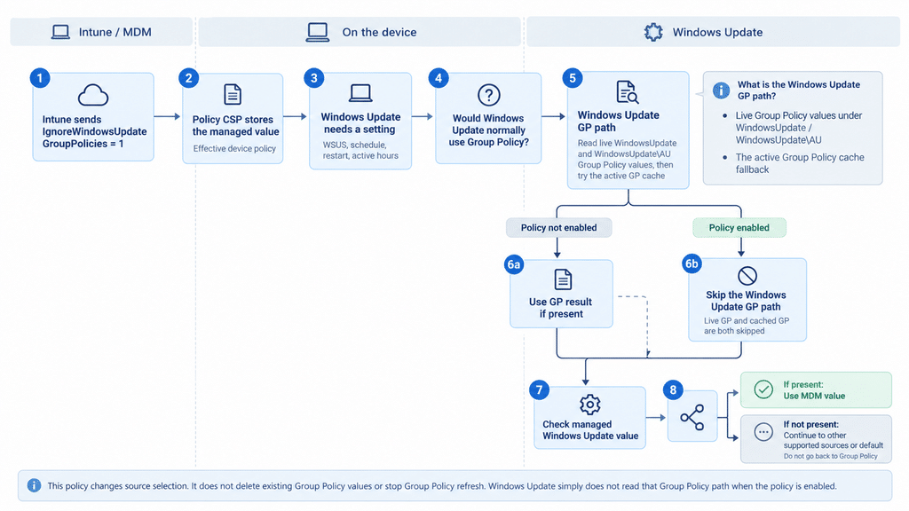
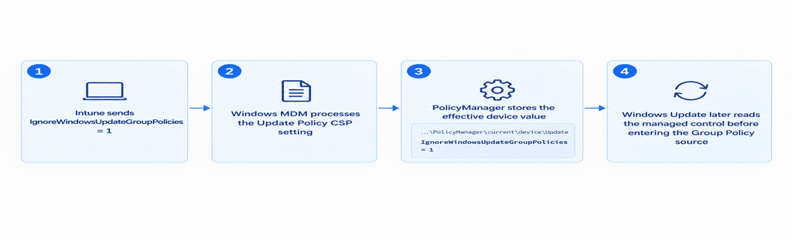
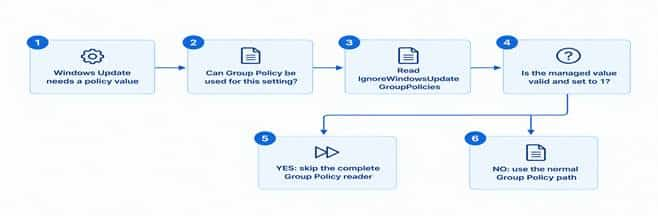
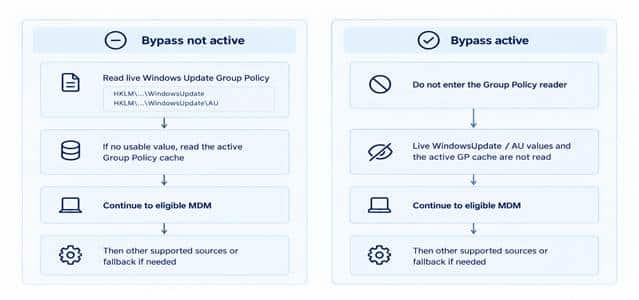
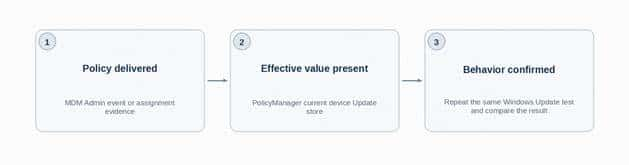
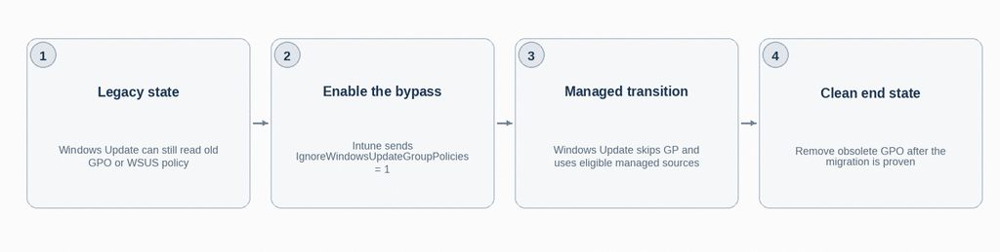

This blog will show you how IgnoreWindowsUpdateGroupPolicies changes Windows Update source selection, why MDMWinsOverGP does not apply here, and how to use the policy when moving from GPO or WSUS to Intune.
Introduction to IgnoreWindowsUpdateGroupPolicies
| What is actually new here? The policy itself is not brand new in October 2026. Microsoft was already listing IgnoreWindowsUpdateGroupPolicies in preview documentation by June 2026. The important change is production support: the current Policy CSP documentation now lists Windows 11 version 24H2 with KB5101684, build 26100.8973, and later. KB5101684 was released on July 28, 2026. The current English CSP page was last updated on September 10, 2026. |
You move Windows Update management from Group Policy or WSUS to Intune. The update ring arrives, the MDM policy is present, and the device is enrolled correctly. Yet Windows Update can still read an old Group Policy value first. That can leave a device pointing at WSUS, following an old schedule, or behaving differently from the policy you are now sending through MDM.
For years, the obvious answer sounded like MDMWinsOverGP. The problem is that Microsoft explicitly documents that the ControlPolicyConflict setting does not apply to the Update Policy CSP. Windows Update needed its own answer.
That answer is IgnoreWindowsUpdateGroupPolicies. Microsoft describes it as a device policy that causes Windows Update Group Policy settings to be ignored so the MDM managed configuration can take over. I wanted to know what “ignored” actually means inside Windows. Does MDM simply win when two values conflict, or does Windows Update stop reading the Group Policy source entirely?
What matters is where Windows makes the decision. This setting does not wait until Group Policy and MDM have both produced a value and then pick a winner. On supported builds, Windows Update can decide not to use the Group Policy source at all. That also means the live Windows Update Group Policy values and the cached Group Policy fallback can both be left out of the read path.


Microsoft now lists the policy for Windows 11 version 24H2 with KB5101684, build 26100.8973, and later.
Microsoft quietly moved IgnoreWindowsUpdateGroupPolicies beyond Insider Preview
First, the timing. This policy has been visible for a while. The earliest public Microsoft documentation I can verify already contains the policy in late June 2026, where it was treated as a Windows Insider Preview setting. That is why it may feel familiar if you were watching the Policy CSP pages during the summer.
The production support line is newer. The current English Update Policy CSP page places IgnoreWindowsUpdateGroupPolicies under Other policies and gives Windows 11 version 24H2 with KB5101684, build 26100.8973, as the minimum. Microsoft released that preview cumulative update on July 28, 2026.
I cannot prove the exact documentation commit that changed the entry from Insider Preview to the production build requirement because the Microsoft Learn Edit link for this generated CSP page currently points to a source location that is not publicly retrievable. We can verify the sequence: it existed in preview documentation by June, the required production build shipped on July 28, and the current English page was updated by September 10.
Why MDMWinsOverGP never fixed Windows Update
MDMWinsOverGP is often described as the switch that lets MDM win when Group Policy and Policy CSP configure the same setting. Windows Update is the exception that matters here. Microsoft explicitly documents that ControlPolicyConflict does not apply to the Update Policy CSP.
MDMWinsOverGP is still more than a simple last-minute winner. For Policy CSP settings that have a known Group Policy equivalent, Windows can identify the matching Group Policy setting, preserve its state, block that mapped Group Policy setting, and keep MDM authoritative while the managed policy is present.
That model is useful for ordinary Policy CSP settings because Windows knows which Group Policy setting belongs to which managed setting. Windows Update is different. Microsoft explicitly excludes the Update Policy CSP from that generic conflict mechanism, so Windows Update needed a control inside its own policy path.
That is where IgnoreWindowsUpdateGroupPolicies comes in. It does not need to find a matching MDM replacement before doing anything. It changes whether Windows Update can use Group Policy as a source for the setting it is currently trying to resolve.


How IgnoreWindowsUpdateGroupPolicies actually works
The easiest way to understand this setting is as a gate in front of the Windows Update Group Policy reader. First, the control arrives through MDM and becomes a managed device value. Later, when Windows Update needs a different policy value, it checks that control before deciding whether the Group Policy source can be used. The overview on the next page connects those two moments; the steps that follow explain each part.


Policy delivery and policy use are separate events. Intune supplies the control first; Windows Update evaluates it later, when an operation needs a setting. Receiving the assignment is not, by itself, proof of which source that operation used.
The Group Policy box shows the source under consideration, not a read that always happens. The bypass is checked before that source is read. On the normal branch, a usable GP result ends the lookup; only when no usable GP result is returned does that branch continue to MDM. With the bypass active, it skips both live and cached GP.
Step 1: Intune sends the control IgnoreWindowsUpdateGroupPolicies policy
Intune delivers IgnoreWindowsUpdateGroupPolicies through the Update Policy CSP as a device-scoped integer. A value of 1 enables the bypass. A value of 0, or no managed assignment, leaves normal Windows Update Group Policy reading available.
./Device/Vendor/MSFT/Policy/Config/Update/IgnoreWindowsUpdateGroupPolicies
Integer value: 1
Step 2: Windows stores the effective IgnoreWindowsUpdateGroupPolicies managed value
After MDM processes the policy, you can inspect the effective device value in PolicyManager. This is the useful place to confirm that the assignment reached the device. The installed default definition is a different thing and should not be treated as proof that Intune configured the policy
HKLM\SOFTWARE\Microsoft\PolicyManager\current\device\Update
IgnoreWindowsUpdateGroupPolicies = 1
That registry location is our inspection point. The Windows Update implementation does not simply open that DWORD every time it needs the control. It reads the managed Update policy through the Windows policy API. That distinction matters because the CSP is a managed policy contract, not a registry tweak.


Step 3: Windows Update later asks for a policy value
At some later point, Windows Update needs the value for an actual update setting. That could be an update service configuration, WUServer or UseWUServer behavior, an installation schedule, restart controls, active hours, internet update restrictions, or another policy-driven update source. IgnoreWindowsUpdateGroupPolicies is not that value. It controls whether Group Policy can participate in finding it.
Step 4: Windows first decides whether Group Policy is a possible source
The requested Windows Update setting has its own source rules. If Group Policy is not an eligible source for that setting, Windows does not need the bypass and can continue to the sources that are allowed. If Group Policy is eligible, Windows reaches the new control before entering the normal Group Policy reader.
Step 5: Windows checks the IgnoreWindowsUpdateGroupPolicies bypass before it reads Group Policy
Before skipping an eligible Group Policy source, Windows checks that its bypass feature is active on the device and that the control is permitted through MDM. It then reads the managed Update policy, checks that it is actively managed, and expects an integer in the range 0 to 1. A missing assignment, a failed value read, a wrong data type, an invalid value, or 0 does not enable the bypass. A valid managed value of 1 changes the read path only when those prerequisite checks are satisfied.


Step 6: A value of 1 prevents Windows Update from entering the Group Policy reader
This is the important behavior. Windows Update does not read a Group Policy value and then let MDM beat it. When the bypass is active, the Group Policy reader itself is skipped for this path. Because the live registry read and the Group Policy active cache fallback sit inside that reader, both are avoided.
What the Windows Update Group Policy path includes
The Windows Update Group Policy path is the local route Windows uses to obtain an update setting from Group Policy. It is not one folder or another CSP setting. In the inspected client, that route includes the live registry locations below and an active Group Policy cache fallback.
HKLM\SOFTWARE\Policies\Microsoft\Windows\WindowsUpdate
HKLM\SOFTWARE\Policies\Microsoft\Windows\WindowsUpdate\AU
Normal processing first tries the appropriate live location for the requested setting. If no usable live state is available, Windows can obtain the active Group Policy cache location and try the corresponding cached setting. A usable GP result can complete the lookup without consulting MDM. The investigation did not identify a single fixed cache registry path to publish, so the overview names the cache rather than inventing a location.
When the bypass is active, Windows reaches neither read. Removing a value from the live registry and enabling this CSP are therefore different operations: removing the live value does not itself prevent a cached GP fallback, while the bypass skips the whole GP source route.
The policy does not delete either registry key, remove the domain GPO, clear the cache, or stop Group Policy refresh. It simply prevents Windows Update from consuming those Group Policy sources through this read path. A script that writes a value into the same Windows Update Group Policy source locations is treated the same way because the reader cares about the source location, not who originally wrote the value.


Step 7: Windows checks MDM for the setting it actually wanted
The bypass control and the requested Windows Update setting are separate policies. After Group Policy has been skipped, Windows checks whether the requested setting itself is eligible through MDM and whether a managed value is configured. If it is, that managed value can be returned.
Step 8: No MDM value does not bring Group Policy back
If MDM has no configured value for the requested setting, Windows does not jump back to the old Group Policy value. The Group Policy branch has already been removed from this source selection attempt. Windows can continue to other supported non Group Policy sources and the fallback behavior for that setting. Depending on the reader and setting, the outcome can be a supported default, an unconfigured result, or an error; the overview does not mean every missing value automatically becomes a default.
That is why this CSP should not be described as a switch that automatically moves a device to Microsoft Update. It removes the Windows Update Group Policy source from consideration. The remaining result still depends on what MDM and the other supported Windows Update sources actually configure.
The source order in plain English
Without the bypass, an eligible Windows Update policy can be read from Group Policy first. If no usable Group Policy state is found, Windows can continue to the managed Policy CSP source and then to other sources and fallback logic that apply to that particular setting.
With IgnoreWindowsUpdateGroupPolicies enabled, the Group Policy attempt is removed before it starts. The remaining source logic continues without using either the live Windows Update Group Policy values or their active cache fallback. That is the core behavior this new CSP adds.
How to configure it from Intune
The public configuration contract is a device-scoped Policy CSP setting. If your Intune tenant does not expose it through a first-party UI yet, the direct route is a custom Windows configuration profile using the OMA URI below. A value of 1 enables the bypass. A value of 0, or removing the managed setting, returns Windows Update to normal Group Policy eligibility where Group Policy is a supported source.
| Setting | IgnoreWindowsUpdateGroupPolicies |
| OMA URI | ./Device/Vendor/MSFT/Policy/Config/Update/IgnoreWindowsUpdateGroupPolicies |
| Data type | Integer |
| Value | 1 |
Deleting the managed setting, or setting it back to 0, removes the enabled bypass condition and allows normal Group Policy reading again where that source is supported.
Verify that the policy actually arrived
The effective device value can be inspected under PolicyManager. On a managed device, the relevant location is HKLM\SOFTWARE\Microsoft\PolicyManager\current\device\Update. The installed default definition is a different thing and should not be mistaken for proof that the device received an assignment.
A simple read only check looks like this:
| $path = ‘HKLM:\SOFTWARE\Microsoft\PolicyManager\current\device\Update’ $name = ‘IgnoreWindowsUpdateGroupPolicies’ $key = Get-Item -LiteralPath $path -ErrorAction SilentlyContinue if ($key -and $key.GetValueNames() -contains $name) { $key.GetValue($name) } else { ‘No effective IgnoreWindowsUpdateGroupPolicies value is present.’ } |
In the investigation behind this article, a DeviceManagement Enterprise Diagnostics Provider Admin event recorded the integer policy being set to 1, and a later read of the effective device store showed the DWORD present with value 1. That proves delivery and stored configuration. It does not by itself prove which source a later Windows Update operation selected.


What the policy does not do
The bypass is a read decision, not a cleanup operation. It does not remove a domain GPO, delete the WindowsUpdate registry tree, or stop gpupdate from refreshing policy. The legacy Group Policy state can remain on the machine while Windows Update stops consuming it through this read path. If you later disable the bypass, those Group Policy values can become eligible again.
It also does not turn every Windows Update setting into an Intune setting. The requested policy still has to be supported through the source you expect to use. In the Windows build used for this test, there was no matching WindowsUpdate.admx entry for this control. The supported configuration route for the control itself is the Policy CSP URI, not a direct registry edit.
And it does not mean the generic MDMWinsOverGP behavior has changed. Microsoft still documents that ControlPolicyConflict does not apply to the Update Policy CSP. This is a separate update-specific read path. When validating it, treat delivery, stored state, and actual Windows Update behavior as separate checks rather than assuming the registry value alone proves which source Windows Update used.
The static client trace also did not establish a reboot requirement or an exact activation delay. You can verify delivery and the stored PolicyManager value immediately, but you should validate runtime source selection with a controlled Windows Update test on the target build.
Why this matters when moving from WSUS or GPO to Intune
This is probably the most useful migration story. One of the difficult parts of moving Windows Update management to Intune has been proving that old Group Policy configuration is no longer influencing the device. A lingering WUServer, UseWUServer, schedule, or update source policy can make a correctly enrolled device behave as though the migration is incomplete.
IgnoreWindowsUpdateGroupPolicies gives Windows Update a native device wide control for that transition. You can keep the old GPO present while the supported device is instructed not to use the Windows Update Group Policy source. That lets the MDM managed population move first instead of requiring the old domain policy to disappear at exactly the same moment.
I would still treat that as a migration control rather than a reason to leave obsolete policy in place forever. Once the migration is proven, cleaning up the old GPO and understanding the remaining update source configuration is still the cleaner end state.


Windows Update finally has its own Group Policy bypass
This policy fills a long-standing gap. MDMWinsOverGP works where Windows has a known mapping between a Policy CSP setting and its Group Policy equivalent. Windows Update was explicitly outside that generic mechanism. IgnoreWindowsUpdateGroupPolicies gives Windows Update its own control over whether Group Policy participates in the read path.
The key detail is the sequence. Windows first decides whether Group Policy can be a source for the requested setting. It then checks whether the new bypass is supported and allowed, reads the managed control value, and only activates the bypass when that value resolves to 1. At that point the live Group Policy source and its cached fallback are both skipped before Windows continues to the remaining eligible sources.
For a device moving from legacy Windows Update GPOs or WSUS management to Intune, that creates a cleaner handover because the old policy can remain on the machine while Windows Update is told not to consume that GP source. The setting is therefore not a conflict winner and not a cleanup switch. It is a source selection control inside Windows Update itself.